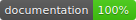

View on GitHub
View on GitHub GatheredKit Reference
GatheredKit Reference
 

GatheredKit is a framework that provides a consistent and easy to use API for various data sources offered by iOS. It is based on the code used by my app, Gathered (App Store), but improved for more general use.
At its core, GatheredKit is a simple protocol:
/**
An object that can provide data from a specific source on the device
*/
public protocol DataSource: class {
/// A boolean indicating if the data source is available on the current device
static var isAvailable: Bool { get }
/// A user-friendly name for the data source
static var displayName: String { get }
/// A delegate that will receive messages about the data source's data
weak var delegate: DataSourceDelegate? { get set }
/// The latest data values. All implementations within GatheredKit have a consistent and
/// documented order to the data in this array, along with type-safe properties for each
/// of the pieces of data
var data: [DataSourceData] { get }
}
There are more protocols, but this is the base protocol that all others inherit from.
Each protocol that inherits from DataSource declares its own methods for updating the data source’s data. These protocols are defined in DataSource
Installation
GatheredKit can be installed using any of the below methods. Once installed, simply import GatheredKit to start using it.
Carthage
To install via Carthage add to following to your Cartfile:
github "JosephDuffy/GatheredKit"
Run carthage update GatheredKit to build the framework and then drag the built framework file in to your Xcode project.
If you plan to submit an app to Apple that uses GatheredKit, remember to add GatheredKit to your script build phase to work around an App Store Submission bug:
$(SRCROOT)/Carthage/Build/iOS/GatheredKit.framework
Documentation
Documentation for GatheredKit is provided in the source code. Browsable documentation is available at https://josephduffy.github.io/GatheredKit/.
Tests
Running the tests for GatheredKit requires Quick and Nimble, which can be installed using Carthage:
carthage build --platform iOS --no-use-binaries
License
The project is released under the MIT license. View the LICENSE file for the full license.